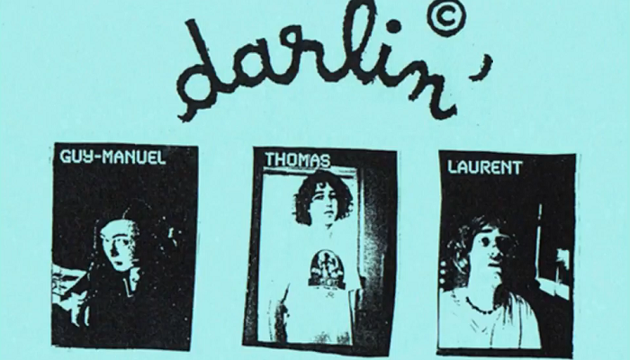
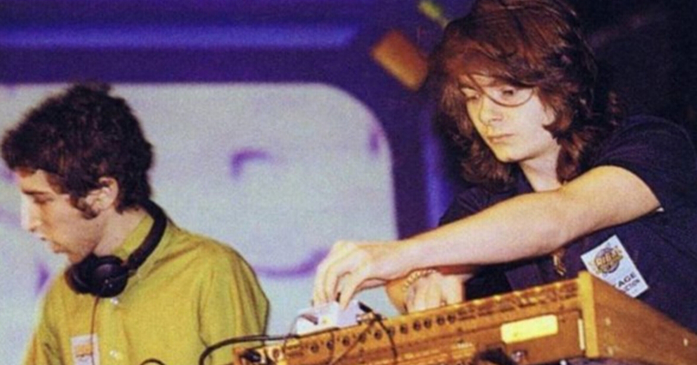
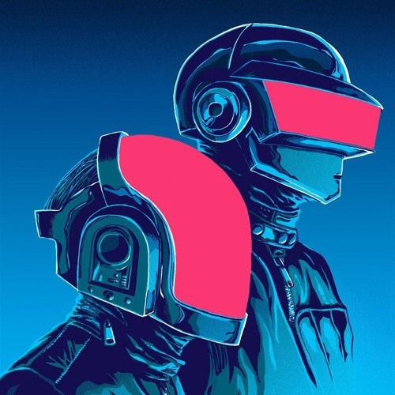
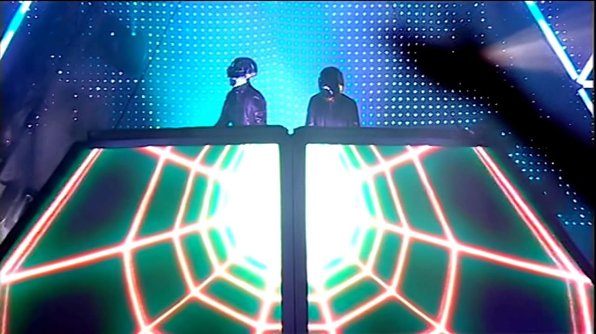
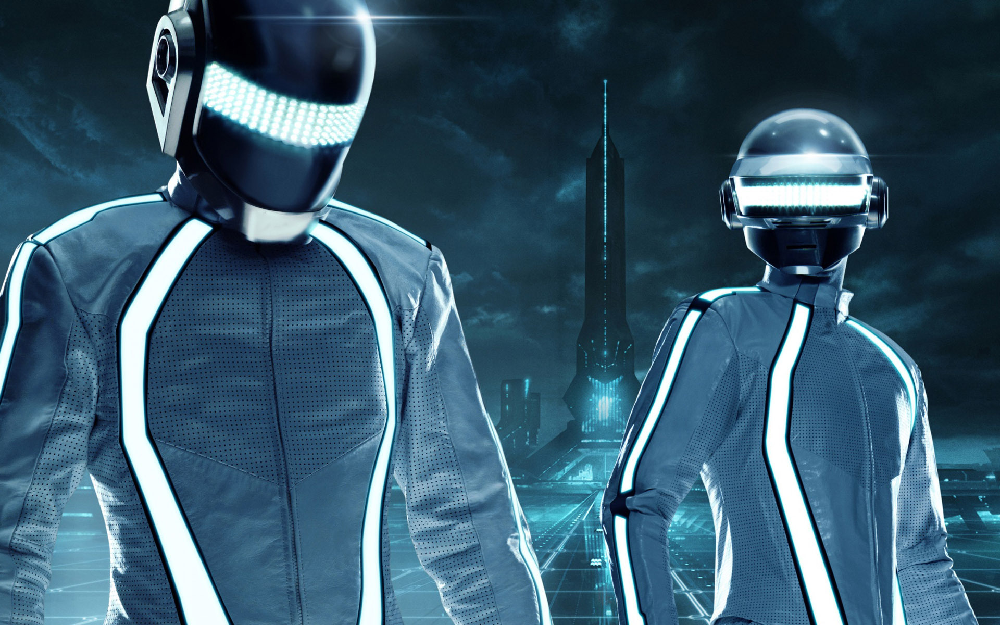
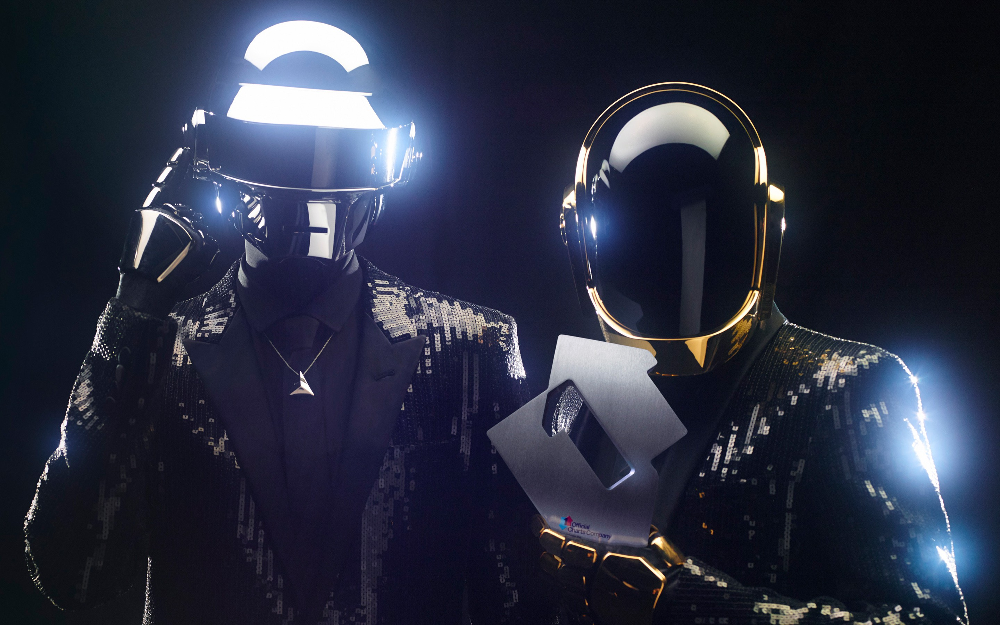

The Beginning
Index
- 1987–1992: Early career and Darlin' 
- 1993–1996: First performances and singles 
- 1997–1999: Homework
- 1999–2003: Discovery 
- 2004–2007: Human After All and Alive 2007 
- 2008–2011: Tron: Legacy 
- 2011–2015: Random Access Memories 
- 2016–2022: Final projects and disbandment
Guy-Manuel de Homem-Christo and Thomas Bangalter met in 1987 while attending the Lycée Carnot secondary school in Paris. The two became friends and recorded demos with others from the school. In 1992, they formed a guitar group, Darlin', with Bangalter on bass, Homem-Christo on guitar, and guitarist and drummer Laurent Brancowitz. The trio named themselves after the Beach Boys song "Darlin'", which they covered along with an original composition. Both tracks were released on a multi-artist EP under Duophonic Records, a label owned by the London-based band Stereolab, who invited Darlin' to open for shows in the United Kingdom. Darlin' disbanded after around six months, having produced four songs and played two gigs. Bangalter described the project as "pretty average". Brancowitz pursued music with another band, Phoenix. Bangalter and Homem-Christo formed Daft Punk and experimented with drum machines and synthesizers. The name was taken from a negative review of Darlin' in Melody Maker by Dave Jennings, who dubbed their music "a daft punky thrash". The band found the review amusing. Homem-Christo said, "We struggled so long to find Darlin', and happened so quickly."
BackIn September 1993, Daft Punk attended a rave at EuroDisney, where they met Stuart Macmillan of Slam, co-founder of the Scottish label Soma Quality Recordings. The demo tape given to Macmillan at the rave formed the basis for Daft Punk's debut single, "The New Wave", a limited release in 1994. The single also contained the final mix of "The New Wave" called "Alive", which was to be featured on Daft Punk's first album. Daft Punk returned to the studio in May 1995 to record "Da Funk". It became their first commercially successful single. After the success of "Da Funk", Daft Punk looked to find a manager. The duo settled on Pedro Winter, who regularly promoted them and other artists at his Hype nightclubs. They signed with Virgin Records in September 1996 and made a deal to license its tracks to the major label through its production company, Daft Trax. Bangalter said that while they received numerous offers from record labels, they wanted to wait and ensure that they did not lose creative control. He considered the deal with Virgin more akin to a partnership. In the mid-to-late nineties, Daft Punk performed live without costumes at various venues. In 1996, they made their first performance in the United States, at an Even Furthur event in Wisconsin. In addition to live original performances, they performed in clubs using vinyl records from their collection. They were known for incorporating numerous styles of music into their DJ sets at that time.
Back
Daft Punk released their debut album, Homework, in 1997. In February that year, the UK dance magazine Muzik published a Daft Punk cover feature and described Homework as "one of the most hyped debut albums in a long long time". According to The Village Voice, the album revived house music and departed from the Eurodance formula. Critic Alex Rayner wrote that it combined established club styles and the "burgeoning eclecticism" of big beat. In 1997, Daft Punk embarked on an international concert tour, Daftendirektour, using their home equipment for the live stage. On 25 May, they headlined the Tribal Gathering festival at Luton Hoo, England, with Orbital and Kraftwerk. The most successful single from Homework was "Around the World". "Da Funk" was also included on The Saint film soundtrack. Daft Punk produced a series of music videos for Homework directed by Spike Jonze, Michel Gondry, Roman Coppola and Seb Janiak. The videos were collected in 1999 as D.A.F.T.: A Story About Dogs, Androids, Firemen and Tomatoes. Bangalter and Homem-Christo both created record labels after the release of their debut album, releasing solo projects from themselves and their friends on Roulé and Crydamoure respectively. Homem-Christo released music as a member of Le Knight Club with Eric Chedeville, and Bangalter released music as a member of Together with DJ Falcon and founded the group Stardust with Alan Braxe and Benjamin Diamond. In 1998, Bangalter's side project Stardust released their only song, the chart hit "Music Sounds Better With You".
BackDaft Punk's second album, Discovery, was released in 2001. The duo said it was an attempt to reconnect with the playful, open-minded attitude associated with the discovery phase of childhood. The album reached No. 2 in the UK, and its lead single, "One More Time", was a hit. The song is heavily autotuned and compressed. The singles "Digital Love" and "Harder, Better, Faster, Stronger" were also successful in the UK and on the US Dance Chart, and "Face to Face" hit number one on the US club play charts. Discovery created a new generation of Daft Punk fans. It also saw Daft Punk debut their distinctive robot costumes; they had previously worn Halloween masks or bags for promotional appearances. Discovery was later named one of the best albums of the decade by publications including Pitchfork and Resident Advisor. In 2020, Rolling Stone included it at number 236 in its list of the "500 Greatest Albums of All Time". In 2021, Pitchfork cited Discovery as the centrepiece of Daft Punk's career, "an album that transcended the robots' club roots and rippled through the decades that followed". Daft Punk partnered with the Japanese manga artist Leiji Matsumoto to create Interstella 5555, a feature-length animation set to Discovery. The first four episodes were shown on Toonami in 2001, and the finished film was released on DVD in 2003. That December, Daft Punk released Daft Club, a compilation of Discovery remixes. In 2001, Daft Punk released a 45-minute excerpt from a Daftendirektour performance as Alive 1997.
BackIn March 2005, Daft Punk released their third album, Human After All, the result of six weeks of writing and recording. Reviews were mixed, with criticism for its repetitiveness and darker mood. "Robot Rock", "Technologic", "Human After All" and "The Prime Time of Your Life" were released as singles. A Daft Punk anthology CD/DVD, Musique Vol. 1 1993–2005, was released on 4 April 2006. Daft Punk also released a remix album, Human After All: Remixes. On 21 May 2006, Daft Punk premiered a film, Daft Punk's Electroma, at the Cannes Film Festival sidebar Director's Fortnight. The film does not include Daft Punk's music. Midnight screenings of the film were held in Paris theaters starting from March 2007. For 48 dates across 2006 and 2007, Daft Punk performed the Alive 2006/2007 world tour, performing a "megamix" of their music from a large LED-fronted pyramid. The tour was acclaimed and is credited for bringing dance music to a wider audience, especially in North America. The Guardian journalist Gabriel Szatan likened it to how the Beatles' 1964 performance on The Ed Sullivan Show had brought British rock and roll to the American mainstream. Daft Punk's performance in Paris was released as their second live album, Alive 2007, on 19 November 2007. The live version of "Harder, Better, Faster, Stronger" was released as a single, with a video directed by Olivier Gondry comprising audience footage of their performance in Brooklyn. In 2009, Daft Punk won Grammy Awards for Alive 2007 and its single "Harder, Better, Faster, Stronger".
BackDaft Punk made a surprise appearance at the 50th Grammy Awards on 10 February 2008, and appeared with rapper Kanye West to perform a reworked version of "Stronger" on stage at the Staples Center in Los Angeles. It was the first televised Daft Punk live performance. In 2008, Daft Punk returned to Paris to work on new material. Winter also stepped down as their manager to focus attention on his Ed Banger Records label and his work as Busy P. He stated in a later interview that Daft Punk were working with an unspecified management company in Los Angeles. The duo held its Daft Arts production office at the Jim Henson Studios complex in Hollywood. In 2008, Daft Punk placed 38th in a worldwide official poll of DJ Mag after debuting at position 71 in the year before. Daft Punk provided new mixes for the video game DJ Hero, and appeared in the game as playable characters. At the 2009 San Diego Comic-Con, it was announced that Daft Punk had composed 24 tracks for the film Tron: Legacy. Daft Punk's score was arranged and orchestrated by Joseph Trapanese. The band collaborated with him for two years on the score, from pre-production to completion. The score features an 85-piece orchestra, recorded at AIR Lyndhurst Studios in London. Joseph Kosinski, director of the film, referred to the score as a mixture of orchestral and electronic elements. Daft Punk also make a cameo as disc jockey programs wearing their trademark robot helmets within the film's virtual world. The soundtrack album was released on 6 December 2010. A music video for "Derezzed" premiered on the MTV Networks on the same day the album was released. The video, which features Olivia Wilde as the character Quorra in specially shot footage, along with images of Daft Punk in Flynn's Arcade, was later made available for purchase from the iTunes Store and included in the DVD and Blu-ray releases of the film. Walt Disney Records released a remix album, Tron: Legacy Reconfigured, on 5 April 2011. In 2010, Daft Punk were admitted into the Ordre des Arts et des Lettres, an order of merit of France. Bangalter and Homem-Christo were individually awarded the rank of Chevalier (knight). On October of that year, Daft Punk made a surprise guest appearance during the encore of Phoenix's show at Madison Square Garden in New York City. They played a medley of "Harder, Better, Faster, Stronger" and "Around the World" before the song segued into Phoenix's song "1901". The duo also included elements of their tracks "Rock'n Roll", "Human After All", and "Together", one of Bangalter's releases as a member of Together.
BackIn 2011, Soma Records released a previously unpublished Daft Punk track, "Drive", recorded while they were signed to Soma in the 1990s. The track was included in a twentieth anniversary multi-artist compilation of the Soma label. In October 2012, Daft Punk provided a 15-minute mix of songs by blues musician Junior Kimbrough for Hedi Slimane's Yves Saint Laurent fashion show. Daft Punk recorded their fourth studio album, Random Access Memories, with musicians including The Strokes frontman Julian Casablancas, Todd Edwards, DJ Falcon, Animal Collective member Panda Bear, Chilly Gonzales, Paul Williams, Pharrell Williams, Chic frontman Nile Rodgers, and Giorgio Moroder. They left Virgin for Sony Music Entertainment through the Columbia Records label. Random Access Memories was released on 20 May 2013. The lead single, "Get Lucky", became Daft Punk's first UK number-one single and the most-streamed new song in the history of Spotify. At the 2013 MTV Video Music Awards, Daft Punk debuted a trailer for their single "Lose Yourself to Dance" and presented the award for "Best Female Video" alongside Rodgers and Pharrell. In December, they revealed a music video for the song "Instant Crush", directed by Warren Fu and featuring Julian Casablancas. At the 56th Annual Grammy Awards, Random Access Memories won the Grammy for Best Dance/Electronica Album, Album of the Year and Best Engineered Album, Non-Classical, while "Get Lucky" received the Grammy for Best Pop Duo/Group Performance and Record of the Year. Daft Punk performed at the ceremony with Stevie Wonder, Rodgers, and Pharrell, as well as Random Access Memories rhythm section players Nathan East, Omar Hakim, Paul Jackson, Jr. and Chris Caswell. Daft Punk co-produced Kanye West's sixth studio album, Yeezus (2013), creating the tracks "On Sight", "Black Skinhead", "I Am a God" and "Send It Up" with West. They provided additional vocals for Pharrell's 2014 single "Gust of Wind". On 10 March 2014, an unreleased Daft Punk song, "Computerized", leaked online. It features Jay-Z and contains "The Son of Flynn" from the Tron: Legacy soundtrack; it was once intended to be a single promoting Tron: Legacy. In April 2015, Daft Punk appeared in a short tribute to Rodgers as part of a documentary on his life, Nile Rodgers: From Disco to Daft Punk. In June, a documentary, Daft Punk Unchained, was released.
Back
Daft Punk appeared on the 2016 singles "Starboy" and "I Feel It Coming" by Canadian R&B singer the Weeknd; "Starboy" topped the Billboard Hot 100, becoming Daft Punk's only US number-one song, and "I Feel It Coming" reached number four. In 2017, Soma Records released a previously unreleased remix of the Daft Punk track "Drive", as part of a compilation featuring various artists. In February 2017, Daft Punk launched a pop-up shop in Hollywood, California, featuring memorabilia, artwork, and a display of the various costumes the duo has worn over the years. The duo also performed with the Weeknd at the 59th Annual Grammy Awards on 12 February 2017. Throughout the years following the Starboy collaborations, Bangalter and Homem-Christo worked solo as producers appearing on several projects. On 21 June 2017, the Australian band Parcels released the song "Overnight", produced and co-written by Daft Punk. The song was written after Daft Punk saw Parcels perform at a live show and invited the band members to the duo's studio. The song would be the duo's final released production. In February 2019, it was announced that Daft Punk would launch an electronic art exhibition at the Philharmonie de Paris featuring various costumes, guitars, and other fixtures based on the theme of the duo's song "Technologic"; the exhibition ran from April 9 up until August 11 of that year. On 22 February 2021, Daft Punk released a video on their YouTube channel titled "Epilogue". The video features a scene from their 2006 film Electroma, in which one robot explodes and the other walks away; a title card created with Warren Fu reads "1993–2021" while an excerpt of Daft Punk's song "Touch" plays. Later that day, Daft Punk's longtime publicist Kathryn Frazier confirmed that the duo had split, but did not give a reason. The news led to a surge in Daft Punk sales, with digital album purchases rising by 2,650 percent. Their friend and collaborator Todd Edwards clarified that Bangalter and Homem-Christo remain active separately. On 22 February 2022, one year after their disbandment, Daft Punk announced the digital release of a 25th anniversary edition of Homework, featuring a newly collected remix album of Homework. The remix album was later released on physical formats. They also streamed a video of their performance at the Mayan Theater in Los Angeles from their 1997 Daftendirektour. The video featured previously unreleased footage of the duo without costumes. Vinyl reissues of their previous albums continued throughout the year.
Back